FANR 6750
Fall 2026
\[\Large Statistics = Information + Uncertainty\]
In the last lecture, we learned that models allow us to quantify relationships between variables based on samples
We also learned that sampling = uncertainty
Inference about populations requires quantifying the magnitude of this uncertainty
But how can we measure how far our estimates are from the population parameters if we don’t know the population parameters?
Parameters
Question: What is the probability that \(\bar{y} = \mu\)?
Problem: If we don’t know \(\mu\), how do we know how far our estimate is from the true value?
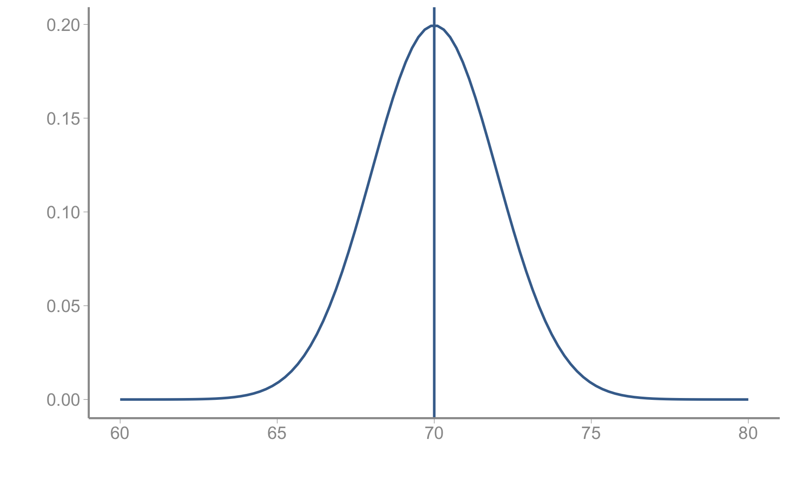
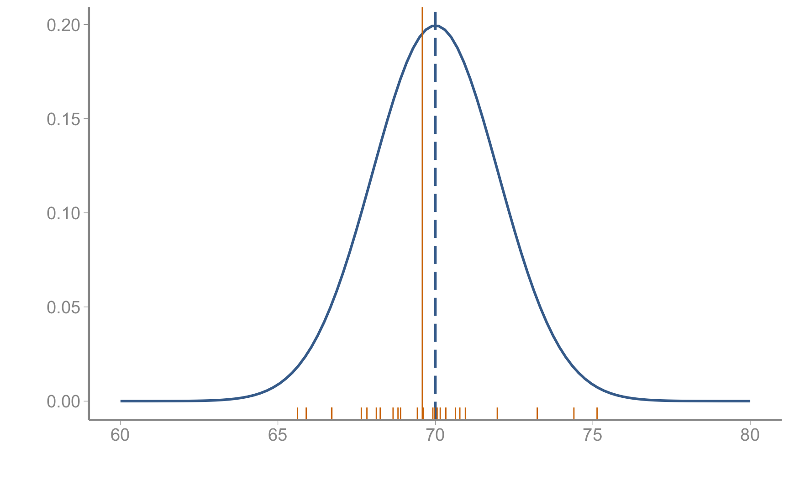
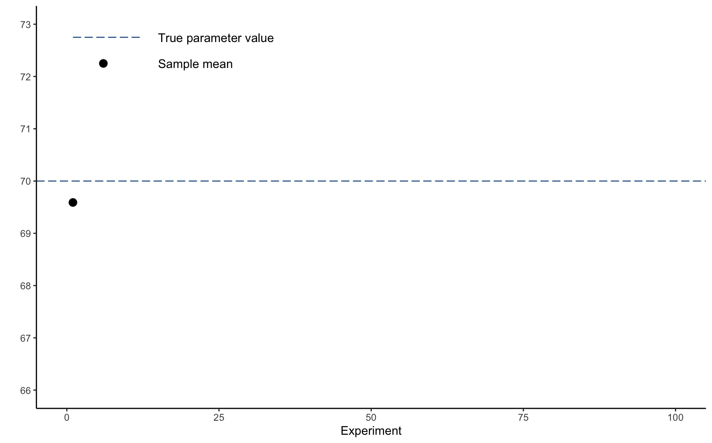
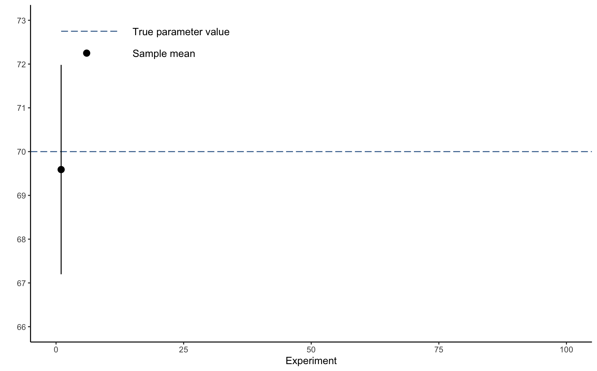
This error bar is the standard deviation of our sample!
But remember, what we really want to know is, how far is the sample mean from the true parameter value?
Imagine we could repeat our experiment many, many times
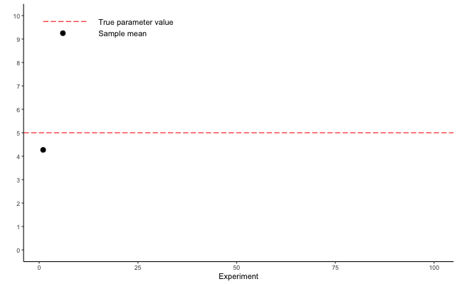
The collection of sample means is referred to as the sampling distribution
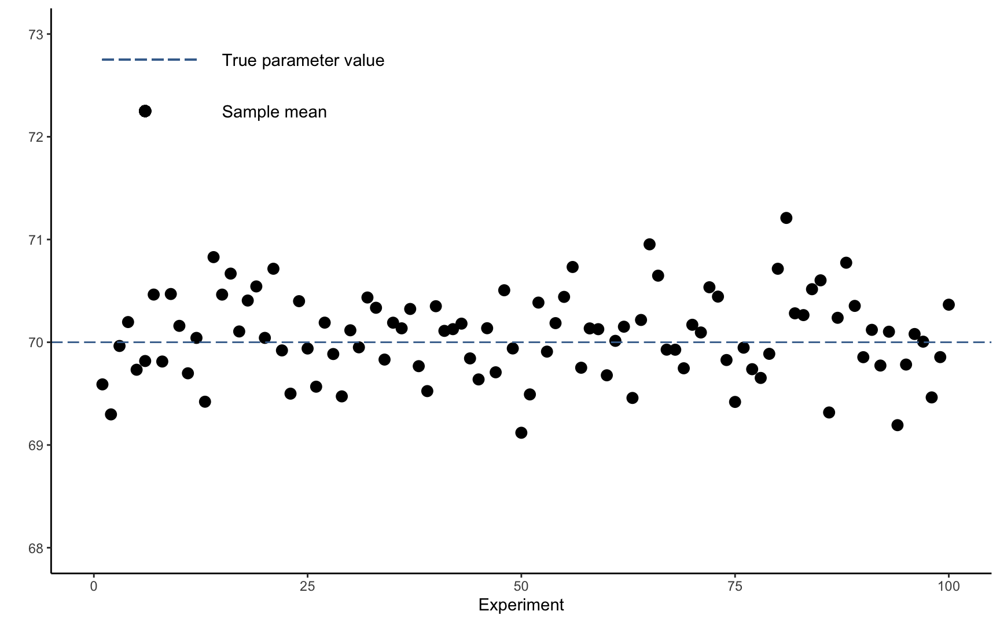
The collection of sample means is referred to as the sampling distribution
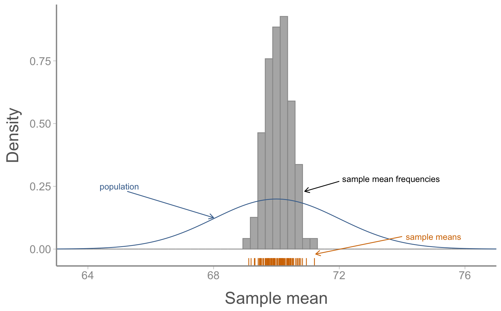
The standard deviation of the sampling distribution measures, on average, how far each sample mean from the true population value
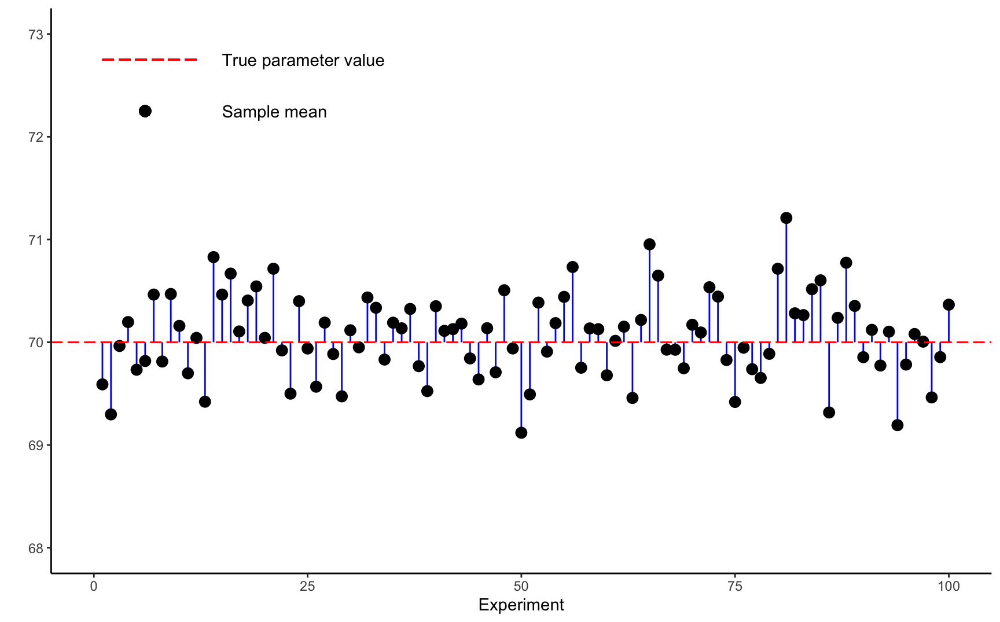
We rarely repeat experiments
But we can estimate the standard deviation of the sampling distribution from a single sample!
How? The central limit theorem!
For a population with mean \(\mu\) and standard deviation \(\sigma\), the sampling distribution will be (approximately) normally distributed with mean \(\mu_X = \mu\) and standard deviation \(\sigma_X = \sigma/\sqrt{n}\).
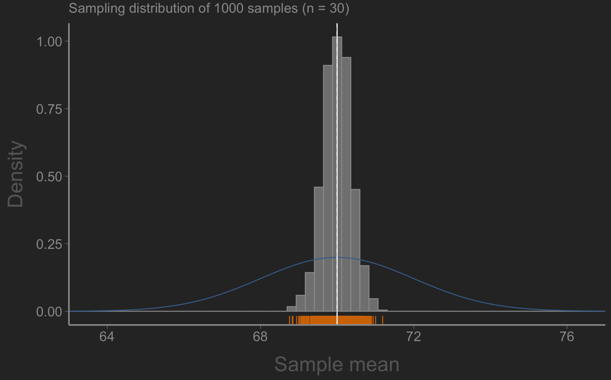
For a population with mean \(\mu\) and standard deviation \(\sigma\), the sampling distribution will be (approximately) normally distributed with mean \(\mu_X = \mu\) and standard deviation \(\sigma_X = \sigma/\sqrt{n}\).
This might seem academic but it is hugely important
given sufficient sample size ( \(\sim n > 30\) ), we know the sampling distribution will be normally distributed without needing to repeat the experiment
although we never know the true population mean \(\mu\), we can estimate how far (on average) our sample mean is likely to be away from it (that’s what the standard deviation is!)
the CLT will hold true regardless of whether the source population is normal!
The standard deviation of the sampling distribution is called the standard error of the mean (or just the standard error)
\[\Large SE =\frac{s}{\sqrt{n}}\]
Standard error tells us how far (on average) our sample mean is likely to be from the population mean
It is the key to estimating uncertainty in our estimates
Smaller is better
The sample standard deviation ( \(s\) ) is a descriptive statistic
\[\large s = \sqrt{s^2}\]
The standard error (SE) is an inferential statistic
\[\large SE = \frac{s}{\sqrt{n}}\]
\(SE = s/\sqrt{n}\)
measures how far, on average, sample statistics are from the true population value (smaller is better!)
We will explore these concepts in lab, using R to generate and visualize repeated samples, calculate properties of the sampling distribution
Uncertainty is commonly reported using confidence intervals
If we calculated a \(x\)% confidence interval from repeated samples of the population, about \(x\)% of those confidence intervals would contain the true population mean
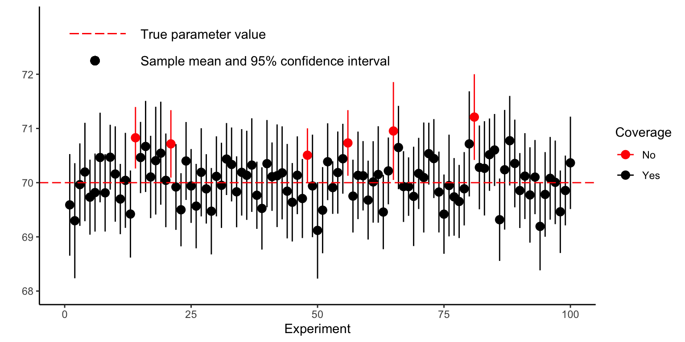
95% of a normal distribution falls between -1.96 and 1.96 standard deviation of the mean3
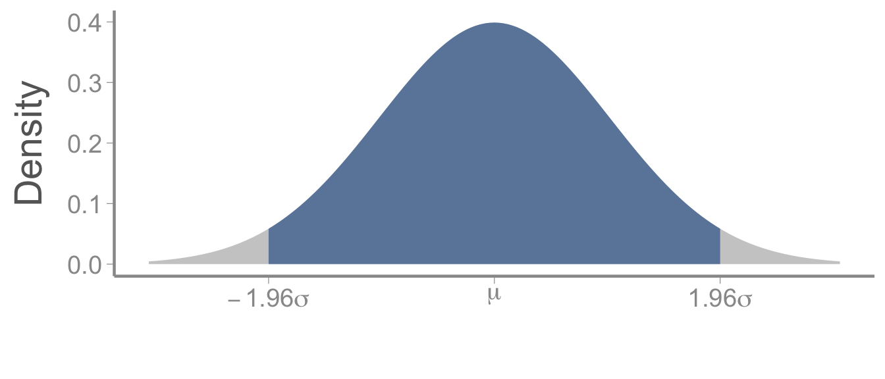
Question - if this is the sampling distribution, what is the standard deviation? What is our estimate of the mean?
95% CI = \(\large \bar{y} \pm 1.96 \times SE\)
What a confidence interval is NOT:
The true population value is considered a fixed parameter
Before we collect our sample, the ends of the confidence intervals are considered random variables (i.e., their value will change each time we collect a sample)
After we collect our sample, the confidence interval either does or does not contain the true population value
Think of confidence intervals like trying to determine where the stake is in a game of horseshoes by looking at where the horseshoes landed
The true parameter (i.e., the stake) does not move
Each horseshoe is the CI based on a single sample (i.e., one throw)
Before a horseshoe is thrown, there is some probability it will land around the stake
After it is thrown, it is either around the stake or not
or…
@dunk Tag someone you could beat in reverse basketball 😭 (@creationsross)
♬ original sound - Chizi
I like to think of confidence intervals as providing a range of values that, based on our sample, are consistent with the population mean (plausible interval?)
The confidence interval we calculate from our sample will not include the true population mean 1 - \(x\)% of the time
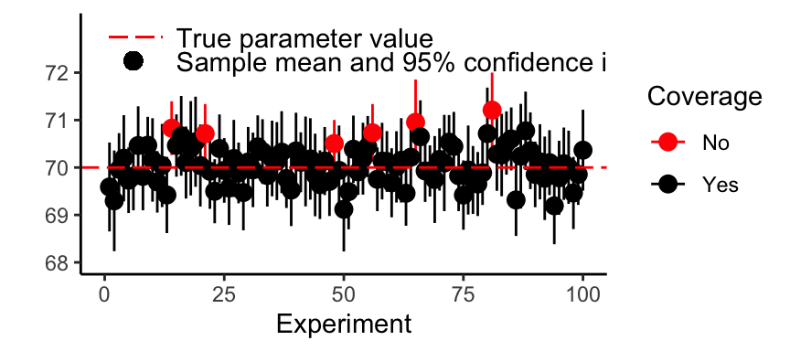
Of course, with our real data, we have no way of knowing if our sample is one of the black points on this graph 😀 or one of the red dots 😭
If our goal is generally to decrease uncertainty in parameter estimates:
Next time: Linear models part 1: categorical predictor w/ 2 levels
Reading: Fieberg chp. 3.6
The mean of sample is often denoted as \(\bar{y}\)
“hat” notation (e.g., \(\hat{\mu}\)) is generally used to indicate that the sample statistics is being treated as an estimate of a parameter
Can easily be calculated for other percentages using R